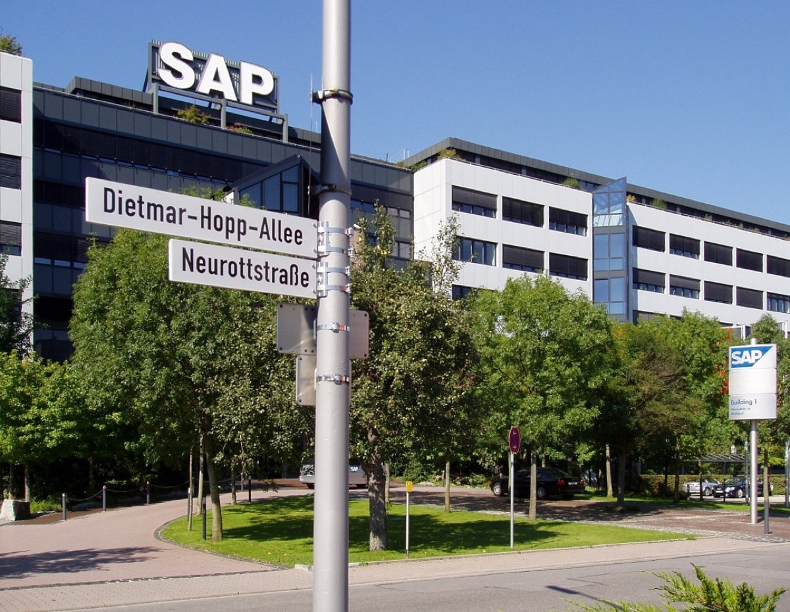

Executive Summary
이 글은 2026년 10월 6일 SAP가 내놓은 인수 합의 한 건을 읽는다. 상대는 벨기에 헨트(Ghent)에 있는 테크울프(TechWolf)다. 이 회사가 파는 것은 인사 담당자가 들여다보는 화면이 아니라 '일의 맥락 그래프'라고 이름 붙인 데이터 모델이고, 그 모델은 어떤 직원에게 무슨 기술이 있는지를 설문이나 자기신고가 아니라 그 사람이 평소 남긴 업무 기록에서 추론한다. 금액은 양쪽 다 밝히지 않았고, 거래는 규제 승인을 거쳐 4분기에 끝날 예정이다.
눈여겨볼 대목은 SAP가 이 모델을 부른 이름이다. 제품을 총괄하는 마노지 스와미나탄은 이 그래프가 에이전트 질의의 "훌륭한 근거 층"이라고 했다. 인사 AI가 답을 지어내지 않도록 붙잡아 두겠다는 뜻인데, 그렇게 붙잡아 두는 재료는 결국 사람이 일하며 남긴 흔적이다. 테크울프 자신도 자기 제품이 유럽 인공지능법에서 고위험으로 분류된다고 공개 자료에 못 박아 두었다. 다만 그 고위험 의무의 시행일은 2027년 12월 2일로 미뤄져 있다.
1절부터 3절까지는 SAP와 테크울프가 공개한 자료, 그리고 그것을 인용한 보도에서 확인한 사실이다. 다만 3절에서 근거 층의 성질을 따지는 대목은 어느 발표문에도 없다. 4절은 공개 자료에서 확인되는 것과 확인되지 않는 것을 갈라 적었고, 5절은 그 사실을 데이터를 다루는 사람의 눈으로 다시 읽은 이 글의 해석이다.

주요 수치
이 인수에 붙은 숫자 가운데 네 개가 글의 뼈대를 이룬다. 첫째는 회사가 스스로 내건 추론 정확도이고, 둘째는 SAP가 이 회사에 처음 돈을 넣은 시점이다. 셋째는 테크울프가 자기 제품을 그 아래 놓은 규제 조항의 시행일이고, 넷째는 당사자 권리와 관련해 공개 자료에서 확인되는 유일한 기한이다.
출처: SAP 보도자료, 테크울프 제품 페이지, 테크울프 신뢰·보안 센터, tech.eu.
약 95%
회사가 밝힌 추론 정확도
제품 페이지에 실린 자체 수치이고 어느 공개 벤치마크에도 연결돼 있지 않다
2024년
SAP가 처음 투자한 해
4,275만 달러 시리즈 B에 참여했고 2년 뒤 회사를 통째로 산다
2027.12.02
유럽 고위험 의무 시행일
테크울프가 자기 분야라고 밝힌 조항이고, 시행은 16개월 미뤄졌다
30일
삭제 요청 처리 기한
신뢰·보안 센터가 적은 값이고, 정정을 거절당했을 때의 절차는 없다
SAP가 산 것은 인사 프로그램이 아니라 데이터 모델이다
발표는 2026년 10월 6일 독일 발도르프와 벨기에 헨트에서 동시에 나왔다. SAP는 테크울프를 인수하는 계약에 서명했다고 밝혔고, 거래 조건은 공개하지 않았다. 통상적인 선행 조건과 규제 승인을 전제로 2026년 4분기에 종결할 예정이다. 보도자료 제목에는 AI 시대에 기업이 일을 증거에 기반해 보게 한다는 뜻의 evidence-based라는 낱말이 들어 있는데, 이 한 낱말이 인수의 성격을 거의 다 설명한다.
규모를 가늠할 단서는 금액이 아니라 수식이다. tech.eu는 이 거래가 벤처 투자를 받은 소프트웨어 기업 인수로는 벨기에 역사상 가장 큰 규모로 알려졌다고 전했다. 같은 수식이 보도에만 있는 것은 아니다. 발표 당일 공동창업자 겸 대표 안드레아스 더 네버가 회사 블로그에 올린 서한도 같은 문장을 쓰면서, 벨기에에서 임직원이 지분을 현금으로 바꾼 규모로도 역대 최대라고 덧붙인다. 그래도 금액이 공개되지 않았으므로 확인된 수치는 아니다. 같은 서한에는 창업자와 임직원, 투자자가 매각 지분 가치의 3%를 새로 세운 테크울프 재단에 내놓는다는 대목도 있다.
테크울프는 2018년에 세워졌고 직원이 120명을 넘는다. 누적 조달액은 5천만 달러 이상이고, 투자자 명단에는 펠릭스 캐피털과 노션 캐피털, 20VC와 함께 서비스나우, 워크데이, 그리고 SAP가 들어 있다. 이 마지막 이름이 중요하다. SAP는 2024년 4,275만 달러 규모의 시리즈 B에 투자자로 참여했다. 이번 인수는 바깥에서 새 회사를 발견한 사건이 아니라, 2년 전부터 지분으로 이어져 온 관계가 끝까지 간 결과다. 파는 쪽이 든 이유는 속도다. 더 네버는 서한에서 미국 연간 반복 매출이 지난 18개월 동안 100만 달러에서 1,500만 달러로 늘었는데도 급한 시장의 수요를 따라갈 수 없었고, 그래서 더 큰 플랫폼과 규모가 필요했다고 적었다.
인수 뒤의 운영 계획도 발표문에 함께 있다. 테크울프는 헨트 본사와 런던·뉴욕 사무소를 유지한 채 공동창업자 안드레아스 더 네버(Andreas De Neve)가 이끄는 독립 법인으로 남고, 플랫폼은 SAP 고객뿐 아니라 비(非)SAP 고객에게도 계속 제공된다. 사람의 이동은 서한 쪽이 더 구체적이다. 공동창업자이자 최고기술책임자인 예룬 판 하우터(Jeroen Van Hautte)가 샌프란시스코로 옮겨 새 사무소를 열고, 세 번째 공동창업자 미카엘 보르노(Mikaël Wornoo)는 회사를 떠난다. SAP 쪽에서는 이 회사가 SuccessFactors 포트폴리오의 지능형 핵심이 될 것이라고 말한다. 회사를 삼켜 제품에 녹이는 방식이 아니라, 모델과 연구 인력을 그대로 두고 자기 제품군이 그 모델을 불러 쓰게 만드는 방식이다.

발표문이 이름을 밝힌 고객은 여덟 곳이다. HSBC, 아틀라스콥코 그룹, GSK, 에릭슨, AMD, 메트라이프, 페이팔, 부킹닷컴. 은행과 제약, 통신 장비와 반도체, 보험과 여행 플랫폼이 섞여 있고 모두 수만 명 단위를 고용하는 기업이다. 직원 수가 많고 직무가 복잡할수록 "우리 회사에 어떤 기술이 있는지"를 사람이 손으로 셀 수 없다는 점이 이 제품의 시장이다.
2026년 한 해 SAP의 인수 목록에 놓고 보면 흐름이 보인다. 3월 렐티오(데이터 관리), 5월 드레미오와 프라이어랩스(표 데이터 파운데이션 모델), 그리고 10월 테크울프다. 앞의 셋이 기업 안에 흩어진 데이터를 모델이 먹을 수 있는 형태로 만드는 쪽이었다면, 이번은 그 대상을 사람으로 넓힌 것이다.
테크울프는 설문 대신 업무 기록을 읽는다
기업이 사내 기술 현황을 파악하는 전통적인 방법은 묻는 것이다. 직원에게 보유 기술을 고르게 하거나, 관리자에게 팀원의 역량을 평가하게 한다. 이 방식의 약점은 오래전부터 알려져 있다. 한 번 채운 목록은 갱신되지 않고, 같은 일을 하는 두 사람이 자기 기술을 전혀 다른 낱말로 적으며, 자기평가는 사람마다 눈금이 다르다.
테크울프는 묻는 단계를 건너뛴다. 고객사가 이미 쓰고 있는 시스템에 연결해 거기 쌓이는 기록을 읽고, 그 기록에서 기술을 역산한다. 제품 페이지가 드는 입력은 직원의 업무 활동, 직무 역할, 이수한 교육, 그리고 지라나 아사나 같은 업무 시스템이다. SAP SuccessFactors와 워크데이, 오라클 같은 인사 시스템도 연결 대상에 올라 있다. 사람이 새로 입력해야 하는 것은 원칙적으로 없고, 이미 일하면서 남긴 것이 그대로 재료가 된다.
회사 FAQ의 목록은 조금 더 넓다. 업무 시스템에는 지라뿐 아니라 서비스나우와 팀즈가 들어가고, 교육 이수는 과정 설명이 함께 넘어올 때만 근거로 치며 수강 신청이나 진행 중인 과정은 치지 않는다. 갱신 주기도 같은 문서에 있다. 하루나 일주일, 한 달 가운데 고객사가 고르게 되어 있다. SAP가 상시 갱신이라 부른 것을 실제로 얼마나 자주 돌릴지는 사는 쪽이 정한다.
쓰지 않기로 한 것도 공개해 두었다. 링크트인 같은 외부 프로필 데이터를 쓰느냐는 물음에 회사는 아니라고 답하면서, 기술 추론은 고객 조직이 소유한 데이터에서만 한다고 못 박는다. 이유로 든 것은 셋이다. 프로필은 자기신고라 믿을 수 없고, 개인정보 측면의 노출을 만들며, 긁어 오는 행위는 링크트인 약관을 어긴다는 것이다. 어떤 기록까지 쓸 수 있느냐는 질문에 회사가 이미 선을 하나 그어 두었고, 그 선을 그은 이유 가운데 하나가 법이다.
이렇게 만들어지는 모델이 '일의 맥락 그래프(context graph for work)'다. SAP 보도자료는 이 그래프가 세 층에서 작동한다고 적는다. 첫째는 일 그 자체로, 직무를 그 안의 과업 단위까지 쪼갠다. 둘째는 사람이 보유하고 실제로 쓰는 기술이다. 셋째는 외부 노동시장이다. 그리고 이 세 층을 고객사의 사업 전략에 비춰 놓는다. 채용과 재교육, 인력 재배치를 맡은 사람이 더 나은 정보 위에서 일하게 하는 것이 목적이라고 발표문은 설명한다.
직무 제목이 아니라 과업 단위로 내려가는 선택이 이 모델의 핵심이다. 같은 '데이터 분석가'라도 회사마다 하는 일이 다르고, 한 회사 안에서도 사람마다 다르다. 과업으로 쪼개면 직함이 달라도 같은 일을 하는 사람을 묶을 수 있고, 어떤 과업이 늘고 줄었는지를 시간에 따라 볼 수 있다. 셋째 층인 외부 노동시장은 그 결과를 회사 밖 기준에 맞댄다. 사내에서만 통하는 이름을 단 기술이 시장에서는 무엇이라 불리는지를 붙여 주는 일이다. 회사 설명으로는 이 바깥 층이 지난 9년 동안 모은 채용공고 15억 건이고, 기술끼리의 관계를 담은 사전에는 3만 개가 넘는 항목이 들어 있다.
정확도에 대해 회사가 내건 수치는 약 95%다. 이 값은 테크울프가 제품 페이지에서 스스로 집계한 것이고, 어떤 모집단에서 무엇을 정답으로 두고 잰 것인지는 공개돼 있지 않다. 회사가 이 분야의 평가를 숨기는 쪽인 것은 아니다. 2025년 12월에는 직무와 기술을 다루는 AI를 재는 공개 벤치마크 WorkRB를 내놓았고, 자사 AI 소개 페이지는 학술지에 실은 논문 일곱 편을 열거한다. 다만 95%라는 값이 그 가운데 어느 잣대로 나온 것인지는 어디에도 연결돼 있지 않다. 이 글은 이 수치를 회사의 주장으로만 다룬다.
아래 도식은 기록이 들어가 그래프가 되고, 그 그래프가 다시 인사 에이전트의 답을 받쳐 주는 흐름을 한 장에 그린 것이다. 점선으로 표시한 아래쪽 띠가 4절에서 따져 볼 자리다.
▲ 페블러스 원본 도식 | 출처: SAP 보도자료와 테크울프 제품 페이지·신뢰 센터를 정리
에이전트가 기대는 '근거 층'의 재료
SAP 보도자료에서 이 인수의 이유를 말하는 문장은 SAP 오토노머스 스위트 사장 겸 최고제품책임자 마노지 스와미나탄(Manoj Swaminathan)의 것이다.
테크울프의 독자적인 기술·업무 맥락 그래프는 업무와 기술 계획, 인재 관리에 관한 에이전트 질의에 훌륭한 근거 층을 제공한다.
'근거 층(grounding layer)'은 생성 AI를 다뤄 본 사람에게는 익숙한 말이다. 모델이 혼자 답을 지어내지 않도록, 답하기 전에 반드시 들여다봐야 하는 사실의 바닥을 깔아 두는 것을 가리킨다. 스와미나탄은 같은 자리에서 이 층이 토큰 사용을 효율적으로 만들고 인력 에이전트의 배치 비용을 낮추며, 기술 기반 채용과 인력 계획, 역할 재설계 같은 장면에서 Joule을 더 똑똑하게 만들 것이라고 덧붙였다. 보도자료의 제목이 "증거 기반"을 앞세운 이유도 여기에 있다.
그러니 이 인수는 인사 소프트웨어를 하나 더 사들인 일이 아니다. SAP가 사들인 것은 자사 에이전트가 사람에 관한 질문을 받았을 때 딛고 설 바닥이다. "이 역할을 맡길 사람이 사내에 있나", "이 팀을 재교육하려면 무엇부터인가" 같은 질문에 에이전트가 답할 때, 그 답은 이 그래프가 담아 둔 것 이상을 넘지 못한다. 근거 층이 답을 떠받치는 한, 거기 담긴 것이 그 답의 상한이다.
이 설계의 장점과 위험은 같은 곳에서 나온다. 답이 사실에 묶이는 대신, 그 사실이 틀렸을 때 틀린 답도 똑같이 사실처럼 보인다는 점이다. 기술 추론은 사람이 한 일에서 사람의 능력을 역산한 결과이고, 역산은 늘 가정을 깔고 있다.
공동창업자 더 네버가 발표에 붙인 말은 수요 쪽을 가리킨다. 그는 조직들이 "AI가 일을 어떻게 재편하고 있는지, 그래서 자기 인력이 어떤 모습이어야 하는지"를 알아내려 애쓰고 있다고 했다. 기업이 인력 구성을 다시 짜야 한다고 느끼는 지금, 그 판단의 입력을 쥔 쪽이 값을 받는다는 뜻이다. 그 입력은 결국 직원 한 사람 한 사람의 일하는 기록이다.
같은 발표문에서 더 네버는 자기 회사가 8년 동안 만들어 온 것을 "증거 층(evidence layer)"이라고 부른다. 사는 쪽이 근거 층이라 부른 자리를 파는 쪽은 증거 층이라 부르는 셈인데, 가리키는 것은 같다. 왜 하필 SAP였는지도 그가 같은 날 서한에 써 두었다. 오늘날 일이 어떻게 이루어지는지에 대한 증거는 대부분 인사 시스템이 아니라 그 옆의 운영 시스템에 있고, 세계에서 가장 큰 기업들이 그 운영을 SAP 위에서 돌린다는 것이다. 그러니 "일의 시스템에 가능한 한 많이 접근해야 한다"는 것이 그의 결론이다. 인수의 이유를 파는 쪽이 접근 범위로 설명한 문장이다. 근거 층을 넓히는 다음 단계는 인사 기록이 아니라 회사의 일이 실제로 돌아가는 기록이라는 뜻이기도 하다.
이 층이 받치는 것이 SAP의 에이전트만도 아니다. 같은 서한에 따르면 적지 않은 고객이 테크울프를 챗GPT와 클로드, 코파일럿 같은 에이전트 안에서 쓰고 있다. 사람에 관한 이 그래프는 한 회사의 제품 울타리 밖에서도 이미 답의 바탕 노릇을 하고 있다.
잘못 매겨진 기술 한 줄, 당사자는 어떻게 고치나
4.1회사가 공개해 둔 것
공정하게 짚어 둘 것이 하나 있다. 테크울프는 이 질문을 아예 비워 둔 회사가 아니다. 제품 페이지는 '스킬 어시스턴트(Skill Assistant)'라는 도구를 내세운다. 직원에게 자동 생성된 기술 프로필을 보여 주고, 직원이 그것을 검토하고 갱신할 수 있게 한다. 신뢰·보안 센터의 목록도 길다. ISO/IEC 27001과 ISO/IEC 42001 인증, SOC 2 보고서, 유럽과 미국 중 고를 수 있는 데이터 소재지, 고객별로 분리된 환경, 문서화된 보존 일정과 자동 삭제다. 삭제를 포함한 정보주체 권리 요청은 30일 안에 처리한다.
내건 원칙도 공개돼 있다. 제품 사이트의 AI 헌장은 네 단계로 짜여 있다. 차별을 막기 위해 모델을 감사하고, 블랙박스가 아니라 설명할 수 있는 판단을 내놓고, 데이터 보호를 모델마다 넣고, 특허보다 공개를 택한다는 것이다. 2024년 10월에는 유럽위원회의 AI 협약(AI Pact)에 가입하면서 기술과 비기술을 합쳐 아홉 가지 서약에 서명했고, 옥스퍼드대에서 정보보안과 프라이버시를 가르쳤던 이언 브라운과 함께 책임 있는 AI 전략을 짰다. 채용 차별을 겨냥한 뉴욕시 조례에 맞춰 만든 편향 검사 도구함을 고객에게 제공한다는 대목도 같은 글에 있다. 공백을 지적하기 전에 채워진 것을 먼저 보는 편이 맞다.
ISO/IEC 42001은 인공지능 관리체계를 다루는 표준이다. 테크울프는 2025년 1월 키바(Kiwa)로부터 이 인증을 받았다고 공지하면서, 자사 솔루션이 "부속서 III 4절에 따라 고위험으로 분류된다"고 직접 적었다. 규제 당국이 지목한 것이 아니라 회사가 먼저 자기 위치를 밝힌 문장이다. 이 점은 이 분야 벤더 가운데 드문 편에 속한다.
4.2원칙은 적혀 있고 절차가 비어 있다
원칙 자체는 오히려 촘촘한 편이다. 신뢰·보안 센터는 다툼이 있거나 불확실한 사안에 분명한 에스컬레이션 경로를 둔다고 말하고, 이용자가 어떻게 그리고 왜 그런 판단이 나왔는지 이해할 수 있다고도 말한다. 둘 다 여기서 묻는 것을 정면으로 겨냥한 문장이다. 그러나 그 경로가 누구에게 가서 며칠 안에 어떤 형식으로 끝나는지, 근거로 삼은 기록을 당사자에게 실제로 보여 주는지는 이어지지 않는다. 다투는 동안 그 기술 한 줄이 채용·재교육·재배치 판단에 계속 쓰이는지도 어느 문서에도 없다.
대신 분명한 답이 하나 있고, 그 답이 물음의 자리를 옮긴다. 회사 FAQ는 "AI의 제안을 누가 검증하는가, 직원인가 관리자인가"라는 물음을 따로 세워 두고, 기본값은 직원이라고 답한다. 팀즈나 슬랙에 붙은 스킬 어시스턴트가 그 창구다. 그런데 같은 답의 뒷문장이 조건을 하나 붙인다. 관리자가 먼저 검증하는 더 엄격한 경로도 있고, 그것은 도입할 때 고객사가 내리는 거버넌스 선택이라는 것이다. 자기 기술 한 줄을 자기가 먼저 손볼 수 있는지 없는지가 제품의 성질이 아니라 고용주가 계약할 때 고른 설정이라는 뜻이다. 제품 소개 페이지의 "직원이 자기 기술을 소유한다"는 문장과, 관리자와 인사팀이 콘솔에서 기술 데이터를 승인하고 조정한다는 문장은 모순이 아니라 같은 제품의 두 설정값이다.
이것이 사소해 보인다면 추론의 성질을 생각해 보면 된다. 어떤 사람이 지난 반년 동안 지라에서 맡은 티켓이 전부 유지보수였다면, 그 사람이 설계를 못 하는 것이 아니라 설계를 맡을 기회가 없었던 것일 수 있다. 육아휴직이나 병가로 비어 있는 구간, 조직 개편으로 역할이 바뀐 구간, 기록을 남기지 않는 방식으로 일하는 직무도 같은 자리에 선다. 기록의 공백과 능력의 부재는 데이터에서 같은 모양으로 보인다.
| 물음 | 공개 자료에 있는 답 |
|---|---|
| 내 기술 프로필을 볼 수 있나 | 볼 수 있다. 스킬 어시스턴트로 검토하고 갱신한다(제품 페이지) |
| 내 기술을 누가 먼저 검증하나 | 기본값은 본인이다. 다만 관리자가 먼저 검증하는 경로를 고객사가 도입할 때 고를 수 있다(FAQ) |
| 내 데이터를 지워 달라고 하면 | 30일 안에 처리한다(신뢰·보안 센터) |
| 이 기술을 가졌다고 본 근거를 보여 주나 | 원칙은 있다. 이용자가 판단의 이유를 이해할 수 있다(신뢰·보안 센터). 어떤 기록을 근거로 제시하는지는 나와 있지 않다 |
| 수정 요청이 거절되면 어디에 다투나 | 원칙은 있다. 다툼이 있는 사안에 분명한 에스컬레이션 경로를 둔다(신뢰·보안 센터). 그 경로가 무엇인지는 나와 있지 않다 |
| 다투는 동안에도 그 값이 인사 판단에 쓰이나 | 공개 자료에서 확인되지 않는다 |
▲ 테크울프 제품 페이지와 FAQ, 신뢰·보안 센터, AI 헌장, SAP 보도자료에서 확인되는 범위 | 비공개 계약 문서에 답이 있을 수 있으나 여기서는 공개된 것만 본다
4.3법은 어디까지 받쳐 주나
유럽 개인정보보호법(GDPR) 제16조는 부정확한 개인정보를 고쳐 달라고 요구할 권리를 준다. 불완전한 정보를 보완해 달라고 할 수도 있고, 보충 진술을 덧붙이는 것이 그 방법의 하나라고 조문에 나와 있다. 입력된 사실이 틀렸다면 이 조항이 바로 작동한다. 수료하지 않은 과정이 수료로 적혀 있거나, 맡지 않은 프로젝트가 붙어 있는 경우다.
까다로운 쪽은 추론 자체다. 유럽사법재판소는 시험 답안과 채점자의 의견도 응시자의 개인정보라고 보면서, 정정권으로 답안의 내용을 사후에 고칠 수는 없다고 판시했다. 평가는 그 시점의 판단을 기록한 것이지 사실의 오기가 아니라는 논리다. 기술 추론도 같은 성질을 띤다. "이 사람에게 이 기술이 있다"는 모델의 판단에 당사자가 동의하지 않을 때, 그것이 고쳐야 할 오류인지 다퉈야 할 의견인지가 먼저 갈려야 한다. 조문이 보장하는 보충 진술이 들어가는 자리가 거기이고, 그 자리를 제품이 어떻게 구현하는지는 법이 아니라 설계가 정한다.
유럽 인공지능법 쪽은 더 직접적이다. 부속서 III 4항은 고용과 근로관계 관리에 쓰이는 AI를 고위험으로 묶는데, 그중 (b)호가 개인의 행동이나 특성에 근거한 과업 배정, 그리고 성과와 행동의 모니터링·평가를 가리킨다. 업무 활동에서 기술을 추론해 배치 판단의 입력으로 쓰는 구조가 바로 이 조항이 겨냥하는 모양이다. 앞서 적었듯 테크울프 자신이 자기 솔루션을 이 조항 아래 놓았다.

고위험으로 분류되면 뒤따르는 것이 있다. 제26조 7항은 고용주가 직장에서 고위험 시스템을 쓰기 전에 근로자 대표와 영향을 받는 근로자에게 알리도록 한다. 제86조는 부속서 III 고위험 시스템의 출력에 기반해 내려진 결정이 당사자에게 법적 효과를 일으키거나 그에 준하는 중대한 영향을 미칠 때, 그 결정에서 AI가 한 역할과 결정의 주요 요소에 대해 분명하고 의미 있는 설명을 요구할 권리를 준다. 위 표에서 원칙만 있던 칸 가운데 "이 기술을 가졌다고 본 근거를 보여 주나"를 약속이 아니라 의무로 바꿀 길이 여기서 열린다.
다만 시계는 아직 멈춰 있다. 2026년 7월 27일 발효한 디지털 옴니버스 규정(EU 2026/1744)이 부속서 III 고위험 시스템에 대한 의무의 적용 시점을 원래의 2026년 8월 2일에서 2027년 12월 2일로 16개월 미뤘다. 표준화 작업과 각국 당국 지정이 늦어졌기 때문이다. 그러니 지금 유럽 기업에 깔리는 기술 추론 시스템은 자기가 고위험이라고 분류된 상태에서, 그 분류에 붙는 의무가 아직 적용되지 않는 구간을 지나고 있다.
이 구간을 두고 먼저 말을 꺼낸 쪽이 테크울프다. 2026년 1월 회사 블로그에 올린 글의 제목이 "AI법은 미뤄졌다. 당신의 위험은 아니다"이고, 본문은 HR 기술의 AI 응용 대부분이 고위험에 해당한다고 적은 뒤, 표준이 확정되기를 기다리지 않고 미리 준비하기로 했다는 선언으로 이어진다. ISO/IEC 42001이 요구하는 관리체계가 인공지능법이 요구하는 품질관리체계와 크게 겹치므로 법이 요구하기 전에 그 엔진을 만들어 두었다는 설명이다. 유예가 곧 방치는 아닌 셈이다.
다만 자발적으로 앞당길 수 있는 것과 없는 것이 갈린다. 회사가 먼저 갖출 수 있는 것은 자기 쪽 관리체계다. 제26조 7항의 통지나 제86조의 설명 요구권처럼 당사자의 손에 쥐어지는 권리는 시행일이 올 때까지 누가 대신 쥐여 줄 수 없다. 원칙과 절차 사이에서 본 간격이 법에서도 같은 모양으로 벌어져 있다.
페블러스가 이 인수를 주목하는 이유
한국에서 이 질문을 받는 창구는 조금 다르게 열려 있다. 2026년 1월 시행된 인공지능기본법은 고영향 인공지능을 정의하면서 "채용, 대출 심사 등 개인의 권리·의무 관계에 중대한 영향을 미치는 판단 또는 평가"를 영역 가운데 하나로 든다. 지원자를 거르는 채용 AI는 이 문장 안에 들어온다. 그런데 이미 회사에 다니는 사람의 기술을 추론해 배치와 재교육의 입력으로 쓰는 일은 조문이 명시한 모양과 정확히 겹치지 않는다. 근로자의 직무 배치와 업무 할당, 인사관리를 고영향 범위에 넣자는 개정안이 국회에 발의돼 있다고 보도됐는데, 그 발의 자체가 지금 조문에 그 자리가 비어 있음을 말해 준다.
유럽이 부속서 III 4항 (b)호로 근로관계 관리를 따로 적어 둔 것과 견주면 차이가 분명하다. 한국 기업이 테크울프 같은 제품을 도입할 때 "채용에 쓰지 않는다"고 선을 그으면 지금 조문이 세운 그 영역에서는 비켜설 여지가 있다. 그렇더라도 그 제품이 사람에 관해 내리는 판단의 성질은 달라지지 않는다. 제도의 칸과 기술의 모양이 어긋나는 구간에서 무엇을 기록할지는 결국 도입하는 쪽이 정하게 된다.
페블러스가 AI-Ready Data를 말할 때 되풀이하는 전제는 데이터의 생성 맥락이 함께 기록되어야 한다는 것이다. 이 인수는 그 전제를 사람 데이터 위로 옮겨 놓는다. 근거 층에 적힌 기술 한 줄이 쓸 만한 근거가 되려면, 그 줄 옆에 어떤 기록에서 나왔는지와 언제 갱신됐는지가 함께 있어야 한다. 그래야 틀렸을 때 어디를 고쳐야 하는지 짚을 수 있다. 출처가 지워진 추론은 맞을 때도 근거가 아니라 주장이다.
한 가지가 더 있다. 당사자가 그 줄을 다퉜다는 사실 자체도 데이터다. 누가 언제 무엇에 이의를 제기했고, 그것이 받아들여졌는지 아닌지, 받아들여지지 않았다면 어떤 이유였는지가 남아야 모델을 고칠 재료가 된다. 이의가 남지 않는 시스템은 자기가 어디서 틀리는지를 배울 입력을 갖지 못한다. 정정 절차를 설계하는 일이 권리 보호인 동시에 데이터 품질 문제인 이유가 여기에 있다.
이 생각은 이 글이 처음 하는 것이 아니다. 테크울프 자신이 AI 협약 가입을 알리는 글에서 직원에게 진짜 소유권을 주는 일이 "우리 데이터의 타당성을 더 높인다"고 적었다. 같은 글은 "편향 없는 AI라는 숱한 주장을 지나, 이제는 벤더가 말한 대로 하고 있음을 입증할 때"라고도 썼다. 그런데 같은 회사의 제품 소개 페이지는 지금도 편향을 없앤다는 문구와 편향 없는 데이터라는 표현을 쓴다. 원칙을 적은 글과 물건을 파는 글 사이의 이런 간격은 이 분야의 거의 모든 회사에 있다. 그래서 더더욱 주장이 아니라 기록이 남아야 한다.
SAP가 산 것을 한마디로 줄이면 사람에 관한 기업의 기억이다. 그 기억이 정확한가보다 먼저 물어야 할 것은, 그것이 고쳐질 수 있게 생겼는가다.
여기까지 읽어 주셔서 감사하다. 이 글이 적은 사실은 SAP 보도자료와 테크울프의 공개 자료, 그리고 그것을 인용한 보도에서 교차 확인한 것이고, 비공개 계약 문서에는 다른 내용이 있을 수 있다. 공개 자료에서 확인되지 않는다고 적은 항목에 대해 추가 자료를 아는 독자가 계시면 알려 주시면 좋겠다. 그리고 지금 여러분의 조직이 쓰는 인사 시스템이 직원에 관해 어떤 값을 추론해 두고 있는지, 그 값을 당사자가 볼 수 있는지 한 번 확인해 보시기를 권한다.
참고문헌
1차 발표 — SAP·테크울프
- 1.SAP News. (2026). "SAP to Acquire TechWolf, Giving Enterprises Evidence-Based View of Work in the Age of AI."
- 2.De Neve, A. (2026). "A New Chapter." TechWolf Blog.
- 3.TechWolf. "Frequently Asked Questions."
- 4.TechWolf. "Trust Center."
- 5.TechWolf. "AI Charter."
- 6.TechWolf. "Skill Governance."
- 7.TechWolf. "Skill Supply Data."
- 8.TechWolf. (2025). "Inside TechWolf's AI Engine: The 5 Layers Driving Skills Intelligence." TechWolf Blog.
- 9.TechWolf. (2025). "Introducing WorkRB: The Open-Source Benchmark for Work AI." TechWolf Blog.
- 10.TechWolf. (2026). "The AI Act Is Delayed. Your Risk Isn't." TechWolf Blog.
- 11.TechWolf. (2024). "How the EU AI Act Will Impact HR Tech & AI Compliance." TechWolf Blog.
업계 보도
- 12.tech.eu. (2026). "SAP Buys TechWolf in Record Belgian VC-Backed Deal."
법령·판례
- 13.European Parliament and Council. (2016). "Regulation (EU) 2016/679 (GDPR), Article 16 — Right to Rectification."
- 14.Court of Justice of the European Union. (2017). "Peter Nowak v Data Protection Commissioner, Case C-434/16." Judgment of 20 December 2017.
- 15.European Parliament and Council. (2024). "Regulation (EU) 2024/1689 (Artificial Intelligence Act)." Annex III(4)(b), Articles 26(7) and 86.
- 16.European Parliament and Council. (2026). "Regulation (EU) 2026/1744 (Digital Omnibus on AI)." In force 2026-07-27.
- 17.대한민국 국회. (2026). "인공지능 발전과 신뢰 기반 조성 등에 관한 기본법 (인공지능기본법)." 제2조 제4호.